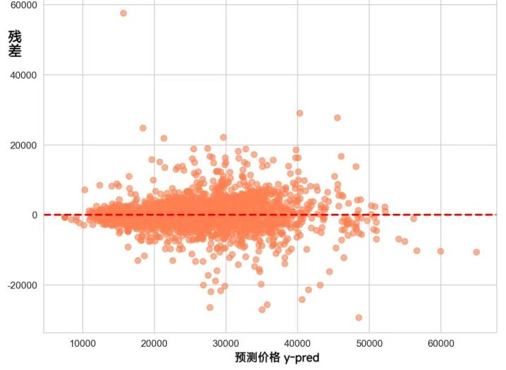

房产价值预测模型构建
本研究选择岭回归、Lasso回归、弹性网络、随机森林、梯度提升树、XGBoost、LightGBM、
支持向量机和多层感知器共九种机器学习算法进行房价预测建模。
POI兴趣点先验权重表
| POI类别 |
先验权重 |
| amenity |
0.8 |
| shop |
0.7 |
| tourism |
0.6 |
| leisure |
0.6 |
| healthcare |
1.0 |
| Public_transport |
1.0 |
| railway |
0.8 |
| aeroway |
0.3 |
| sport |
0.5 |
| education |
1.0 |
| office |
0.6 |
建筑结构人工赋值表
| 特征取值 |
得分 |
说明 |
| 钢混结构 |
0.95 |
稳定性最佳、抗震性更好 |
| 混合结构 |
0.75 |
稳定性较好 |
| 砖混结构 |
0.45 |
稳定性一般 |
| 砖木结构 |
0.25 |
稳定性较差 |
| 其他/未知 |
0.50 |
/ |
电梯楼层组合人工赋值表
| 特征取值 |
得分 |
说明 |
| 有电梯 + 中/高楼层/顶层 |
1.00 |
电梯便利性与视野采光最佳组合 |
| 有电梯 + 低楼层/底层 |
0.70 |
有电梯但楼层较低便利性稍差 |
| 无电梯 + 底层/低楼层 |
0.80 |
无电梯但楼层低步行便利 |
| 无电梯中楼层 |
0.50 |
无电梯中等楼层步行一般 |
| 无电梯高楼层/顶层 |
0.30 |
无电梯高楼层步行不便 |
| 其他情况 |
0.50 |
/ |
房屋朝向人工赋值表
| 特征取值 |
得分 |
说明 |
| 南北通透 |
0.95 |
通风采光最佳,市场最受欢迎 |
| 纯南向 |
0.75 |
采光好但通风稍差 |
| 其他朝向 |
0.40 |
采光通风相对较差 |
| 其他情况 |
0.25 |
/ |
模型评估结果对比
| 模型名称 |
R² |
RMSE |
MAE |
MAPE |
交叉验证R²均值 |
交叉验证R²标准差 |
| 岭回归 |
0.0287 |
9860.26 |
7951.21 |
37.2 |
0.0283 |
0.0084 |
| Lasso回归 |
0.0283 |
9862.74 |
7956.58 |
37.1 |
0.0280 |
0.0085 |
| 弹性网络 |
0.0288 |
9860.02 |
7950.35 |
37.2 |
0.0285 |
0.0084 |
| 随机森林 |
0.7292 |
5206.74 |
3412.02 |
15.0 |
0.7285 |
0.0123 |
| 梯度提升树 |
0.7195 |
5298.55 |
3535.69 |
15.6 |
0.7190 |
0.0118 |
| XGBoost |
0.7245 |
5251.65 |
3500.13 |
15.5 |
0.7240 |
0.0121 |
| LightGBM |
0.6955 |
5521.20 |
3688.06 |
16.3 |
0.6950 |
0.0135 |
| SVR |
0.0919 |
9534.51 |
7450.14 |
32.6 |
0.0915 |
0.0102 |
| MLP |
0.1549 |
9197.77 |
7300.37 |
33.1 |
0.1540 |
0.0156 |
模型评估图像

